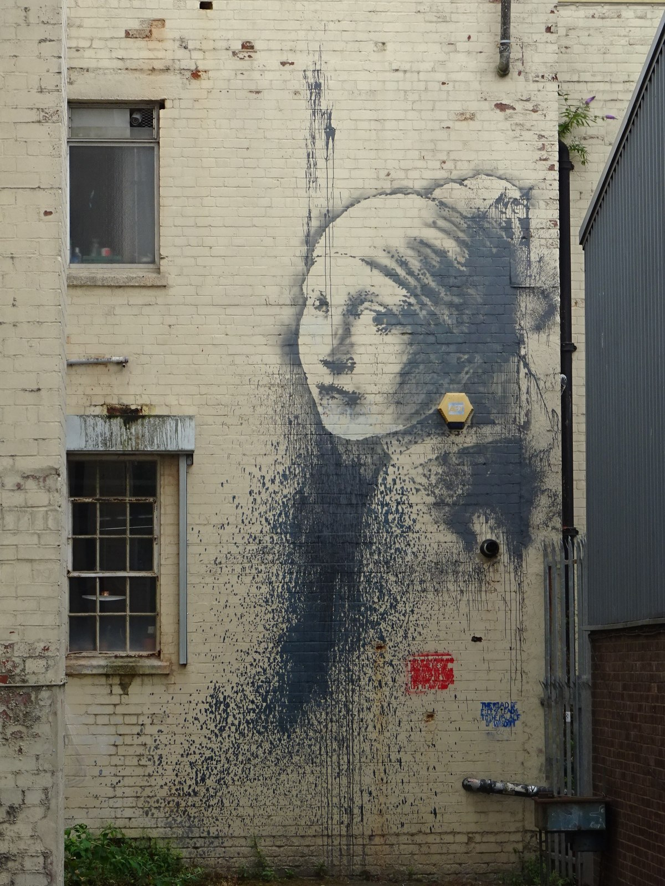

Screams before silence.



FEMININE
ORIGINS
Vermeer's initial painting, completed during the Dutch Golden Age, reinforces feminine standards: modesty, refinement, a sense of grace. The girl's direct gaze creates an egalitarian sensation, inviting viewers to admire her beauty. Her light, soft skin symbolizes purity; this was taken to an extreme in WWII, when the Girl with a Pearl Earring was hidden in a secret bunker in the Netherlands during the Nazi occupation. Outside, the war churned on, but underground she continued to smile knowingly, protected (like culture dictated that women should be, in patriarchies) from outside cruelty. Both the painting itself and the paintings' environment reinforced women as beautiful, graceful objects to be sheltered.
SILENCE
In 2020, the cultural work of the Girl with a Pierced Eardrum grew after a face mask was pasted over her delicately parted (as if she was trying to speak) lips. The mask represents how urban responses to the COVID-19 pandemic stripped away intimacy and human connection, silencing her and billions of others around the world.
UNMASKED
Banksy juxtaposes Johannes Vermeer's Girl with a Pearl Earring against the worst parts of city life to allow his public mural, Girl with a Pierced Eardrum, to perform a completely different cultural work. While Vermeer's portrait reinforced Dutch Golden Age stereotypes of women as pure and beautiful, Banksy's mural highlights how modern city culture maligns even the purest individuals through surveillance, danger, anonymization, and industry.